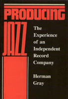

<body bgcolor="#FFFFFF" text="#000000" link="#0000FF" vlink="#CC0000" alink="#CC0000"><center><hr width="350" size="1" align="center" noshade>Explores the organization, ideologies, and social relations of an independent jazz recording company<hr width="350" size="1" align="center" noshade><p><a href="https://cdcshoppingcart.uchicago.edu/Cart/ChicagoBook.aspx?ISBN=9780877225744&&PRESS=temple" target="_top">Buy this book!</a> | <a href="https://cdcshoppingcart.uchicago.edu/Cart/Cart.aspx?PRESS=temple" target="_top">View Cart</a> | <a href="https://cdcshoppingcart.uchicago.edu/Cart/Cart.aspx?PRESS=temple" target="_top">Check Out</a></p><p></p></center><!--none//--><h1>Producing Jazz</h1>
<H2>The Experience of an Independent Record Company</H2>
<h3>Herman Gray</h3>
<P>cloth 0-87722-574-5 $19.95, Oct 88, <FONT COLOR=#990033>Out of Print</FONT>
<BR> 184 pp
</P><p>Small independent cultural organizations&#151record companies, book publishers, newspapers, radio stations&#151are among the most significant yet economically marginal producers of culture today. In <I>Producing Jazz</I>, Herman Gray explores the organization, ideologies, and social relations of an independent jazz recording company. His portrait of Theresa Records, a small but nationally known company in San Francisco, focuses on the ways in which an avocation grows into a business and highlights the conflicting goals of staying small and staying solvent. Gray describes the financial constraints, distribution system, aesthetic decisions, and organizational adjustments faced by Theresa.
<p>The independent status of a recording company is defined not by its economic and structural circumstances, but by the nature of its work, its records, the creative responses to its circumstances, and the commitment and ideology of its staff. The members of Theresa Records describe how staying small enables such a company to produce only the music it believes in and to avoid a hierarchical work structure. But smallness is a disadvantage when it comes to building a reputation, collecting receivables, and ensuring cash flow for the next production.
<p>Despite its low output and tenuous existence, companies like Theresa Records occupy an important niche in the music business by developing new talent, continuing to produce the work of seasoned musicians regardless of their popularity, and remaining stylistically adventurous. <I>Producing Jazz</I> suggests that from the creative and social spaces of such small producers comes much of the most vital, innovative, and progressive music, and therefore their significance far exceeds their size or profit margins.
<BR>&nbsp;<H2>About the Author(s)</H2>
<P><b>Herman Gray</b> is Assistant Professor of Sociology at Northeastern University.</P>
<BR><H2>Subject Categories</H2>
<p><A HREF="/tempress/sociology.html" TARGET="_top">Sociology</a>
<BR><A HREF="/tempress/general.html" TARGET="_top">General Interest</a>
</p>
<p align="center"><a href="https://cdcshoppingcart.uchicago.edu/Cart/ChicagoBook.aspx?ISBN=9780877225744&&PRESS=temple" target="_top">Buy this book!</a> | <a href="https://cdcshoppingcart.uchicago.edu/Cart/Cart.aspx?PRESS=temple" target="_top">View Cart</a> | <a href="https://cdcshoppingcart.uchicago.edu/Cart/Cart.aspx?PRESS=temple" target="_top">Check Out</a></p><p><font face="Arial" size="1"><a href="copyright.html" onMouseOver="window.status='Web Copyright Policy';return true;" onMouseOut="window.status=''" title="Web Copyright Policy">&copy;</a> 2015 <a href="http://www.temple.edu" target="new" onMouseOver="window.status='Link to Temple University home page';return true;" onMouseOut="window.status=''" title="Link to Temple University home page">Temple University</a>. All Rights Reserved. http://www.temple.edu/tempress/titles/462_reg.html</font></p>